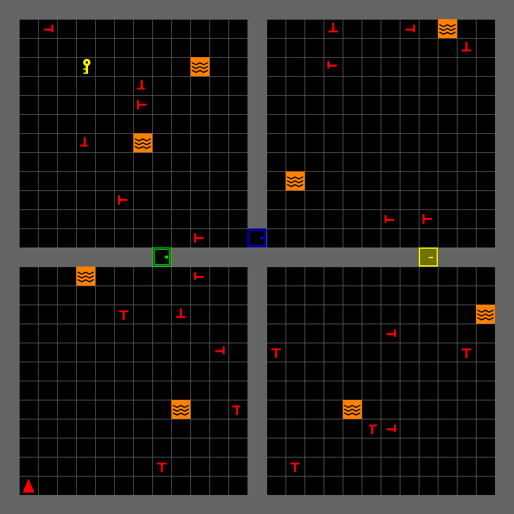
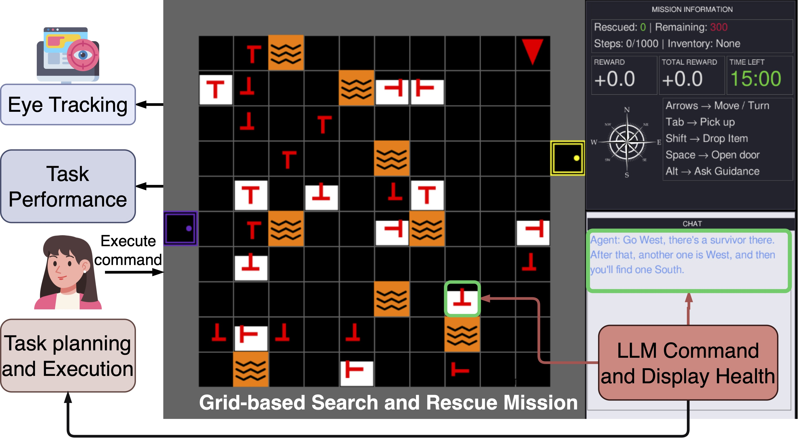

Rescue-Grid
An Open Platform for Human-Machine Teaming
From Workshop Prototype to Reusable Research Infrastructure
2026-07-13
Why We Built Another Sim
Studying trust and workload needs a task you can control — and repeat.
Real disasters aren’t reproducible. Field studies can’t isolate one variable at a time, and they definitely can’t be replayed frame-by-frame in analysis.
We needed a SAR task that was hard enough to matter, controllable enough to manipulate, and instrumented enough to measure.
So we built Rescue-Grid.

From Concept to Testbed
Everything from Part 1 is a config parameter or a log field here.
- Situational Awareness — swappable camera views (full grid → FOV cone) control what’s perceivable; victim health depletes while visible, forcing perceive · comprehend · project
- Trust — the optional LLM assistant offers a suggestion each step; accept/reject is logged automatically, a behavioral trust signal, not just a post-task survey
- Mental Workload — real vs. decoy victims, lava density, room count are the same demand-vs-capacity dials NASA-TLX asks about, except here they’re
build_sar_env()arguments - Physiological Measurement — every game state syncs to Tobii (or any sensor you register) over one LSL clock, so fixations and pupil size line up frame-by-frame with gameplay
Part 1 asked what to measure. Rescue-Grid is where you measure it.
The Game
A building on fire. Real victims. Fake ones too.
- Multi-room building, locked doors + keys
- Real victims vs. decoy victims — pick up the wrong one, take a penalty
- Lava hazards, and victim health that depletes while visible
- Optional LLM assistant you can call on for a suggestion
Built on MiniGrid + Gymnasium — so it’s RL-ready from day one.
Ten Lines to a Running Environment
It’s a standard Gymnasium environment underneath.
reset() / step() / render() — nothing exotic. Drop in your own policy, or drive it by hand.
If you know Gymnasium, you already know Rescue-Grid.
from game.sar.env import build_sar_env
env = build_sar_env(
screen_size=800,
num_rows=2, num_cols=2,
num_real_victims=3,
num_fake_victims=3,
lava_per_room=2,
)
obs, info = env.reset(seed=42)
for _ in range(200):
action = env.action_space.sample()
obs, reward, terminated, truncated, info = env.step(action)
if terminated or truncated:
obs, info = env.reset()Engine Architecture: One Step, Start to Finish
Every frame follows the same path — input to pixels.
move / rescue · deplete health · check mission state
encodes grid, position, mission status
camera crop + info panel + chat panel
Extensible By Design
- Strategy — 5 swappable camera views: full grid, agent-centered, first-person, FOV cone
- Factory —
build_sar_env()assembles a fully configured mission from a few parameters - Template Method —
SARLevelGendefines level-gen hooks; subclass it for a new level type - Pluggable Placers —
VictimPlacer/LavaPlacerswap placement logic without touching the engine
Change the scenario, not the source code.
How LSL and ixp Talk to Each Other
Two independent streams. One shared clock.
read_data() every frame
gaze samples
synchronized clock across both streams
replay.py
What Is ixp?
Behavioral experiments have a shape: setup, tasks, sensors, teardown.
ixp is iHuman Lab’s experiment engine — an Experiment runs a sequence of Tasks, each broken into Blocks of Trials, predefined or randomized order.
Sensors record in parallel with tasks via Ray, and everything streams to a synchronized LSL clock — no manual timestamp alignment.
Rescue-Grid didn’t reinvent this — it just registered as a Task.
run sequentially, push LSL markers
Rescue-Grid Is a Task Inside ixp
ixp orchestrates the session — Rescue-Grid just plugs in.
ixp.Experiment runs an ordered sequence of Tasks, calibrates sensors, and drives everything to completion. Rescue-Grid supplies one Task (SARGame) whose trials stream to their own LSL outlet.
Your sensor could be the next one registered.
class SARGame(Task):
def get_data_signature(self):
return {
"name": "SARGame",
"type": "GameState",
"channel_format": "string",
"source_id": "rescue-grid-sar-game",
}
class SARGameTrial(LSLTrial):
def read_data(self):
state = {**self.gui.user.obs,
"action": self.gui.user.last_action,
"reward": self.gui.user.last_reward}
return [ujson.dumps(state)]Use It In Your Study
Two entry points, depending on how deep you want to go.
Just the environment — for a scripted study or RL training, no ixp required.
Full experiment — wire in your own sensor (EEG, GSR, whatever you’re measuring) exactly the way Tobii is wired in today.
# (a) minimal — no ixp, just Gymnasium
from game.sar.env import build_sar_env
env = build_sar_env(num_rows=3, num_cols=3)
obs, info = env.reset()
# plug in your own policy or logging here
# (b) full ixp experiment
from ixp.experiment import Experiment
from experiment.game import SARGame
experiment = Experiment(config)
experiment.register_sensor(
"MyEEG", sensor_cls=MyEEGSensor, sensor_config={}
)
experiment.add_task(
name="main_game", task_cls=SARGame,
task_config={"config": config["game"]}, order=1,
)
experiment.run()It Already Produced a Paper
LLM guidance changed where people looked — not just how well they did.
- No performance gain — victims rescued per step didn’t budge
- Attention shifted to the chat panel — an attention-guidance trade-off
- Gaze narrowed too: shorter saccades, more localized, text-driven looking
IEEE SMC 2026 — Oveisi & Manjunatha

Come Find Us at NeuroErgonomics
Same platform, a different question — see you at the session.
- Wednesday, July 15 — Sessions 4–6
- Session 6: Human–Robot & Human–AI Teaming (Chair: Alexander von Lühmann)
- LLM-Mediated Communication in Human–AI Teaming: A Physiological Monitoring Study for Search and Rescue

Fork It. Build Your Study.
github.com/iHuman-Lab/rescue-grid
Questions?
hemanth.manjunatha@okstate.edu

iHuman Lab · Oklahoma State University